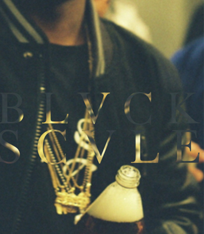

Black Scale will be celebrating its 5 year anniversary this November 2012. This video is a recap of all the video lookbooks we released in the past and a little history behind the brands aesthetic. In the last five years we finally tell the story of what Black Scale truly is and where it comes from. Below you will see a breakdown on how Black Scale started. Thank You and Enjoy.
Black Scale started in 2007 as a simple idea for a t-shirt line. Black Scale did not have a name and only had a black blank satin label with the size woven on the other side of the label. We didnt have a name for the first five seasons. Its like being inside of your mothers womb forming into the human being we are for nine months. Not knowing exactly what to expect, very excited but afraid at the same time. Questioning ourselves everyday because we never once did this on our own and if we were strong enough to make sure this idea (child) was going to grow into what it has today.After the 5th season we gave the brand it’s name Black Scale. The balance of life. Creating color from the absence of color. Black is not a color it’s the absence of all color. The color represents the things we experience and go through as people, figuring out the true meaning of life and mankind. These five seasons introduced you to Black Scale and every season after that is connected and is treated as a Pyramid effect. All graphic designs have a meaning that connect to the past five seasons as well as the cut & sewn, shoes and accessories that tell another story but are also connected like brother and sisters of the brand that are born in the same family but do different things but maintains the aesthetic and bloodline.
The Pyramid effect is like a family tree we created at Black Scale that keeps our story authentic and forever. Yes it is clothes and designs in the end of the day but to us this is what we love and spend many hours, days and years to come that we hope when we die someone can look back at the manuscripts and continue the story we told so the future after us can past it along to the next generations.
Every season we design has a theme and every season we learn from our mistakes but it always ends up working out. Anything can happen that is unexpected and with planning ahead you still have to prepare for the last seconds of fully releasing that season on that day. What I am trying to say is energy is a trippy thing but as long as energy knows what you are trying to accomplish energy always finds you at the craziest times.
For us we tell a story yes but we can alter that story at times depending on the theme and season we are working on. Sometimes the story we are trying to build doesn’t always flow but we find ways to make them work within that season. Figuring it out and trying to put the pieces together, that’s the best part. It’s like everyday life with the everyday balance we use to accomplish the things we need to. Who we are and where we are going to go. What is it about life? That’s what Black Scale is all about “The balance of life”. The sacrifices our older generations made for us to be here today, we make for the future that will continue to tell the story.
| BBC | Supreme | Blackscvle |